Sushi 168- Website Redesign
#UX/UI #ReDesign #Branding
Challenge: Sushi 168 is a buffet restaurant located in Ottawa struggling to reach its customers needs digitally. Although it has a website, it is outdated and makes the experience ordering online for customers hard, stressful and time-consuming.

Objective
Re-design and implement a responsive website that fits with the brand identity and business goals
Goals
Business
Increase digital presence and the number of customer that order through the website.
Improving website experience and help the restaurant retain trust from their customers, showing they care what customers want by adopting the new design.
User
Enjoy a place in which it is possible to spend a nice time with friends, clients, and family
An easy and fast way to order or reserve for a sit online
Process
It was developed following the Design Thinking methodology. First , understanding what was happening with the website and stablishing the problem. Then, the research and collection of quantitative and qualitative data was carried out through interviews. All the information gathered was used analyze it and obtain the insights. We proceeded to start with the design phase, and low and high fidelity prototypes were made. Finally, usability tests were carried out to observe aspects to be improved and the user's interaction with the product.
Problem Statement
Digital Needs
Time is a precious resource that has become scarce in this hectic world, for this reason, it plays an important role in decision-making for clients. Sushi 168 Restaurant Buffet is struggling to reach its customers' needs digitally. The website doesn't provide any important information for making an order or reserving a table, and the information provided is disorganized, lacks hierarchy, and confuses the users. The primary problem that the website addressed was the menu because was difficult to navigate and didn't provide complementary description for the food.
User Research and Key Findings
A user group that has been identified through research were adults who didn't have enough time to cook a meal for themselves or a group of people. Another group identified were those that looks this type of restaurants as a new experience to try many choices of food.
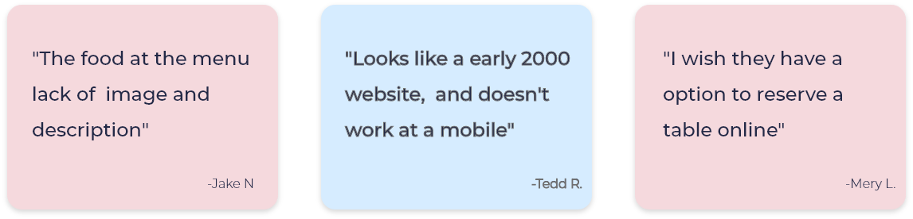Paint Points
Accesibility
-Lack of background and text colours contrast. Making people with visual disabilities challenging to navigate the website. -No keyboard accessibility for screen reader users
Product
-Homepage makes the user lose time trying to figure out how to navigate the website -The menu lack description and images -Looks old and outdated -No responsiveness
Process
-Checkout and payment process is slow -Reservations only available through phone call -Only orders only available for pick-up -No categories or filter options for ordering process -The overall experience is bad, scaring customers to use the website
Support
-No customer support on the website and the phone available during pike hours is always busy.
User Personas
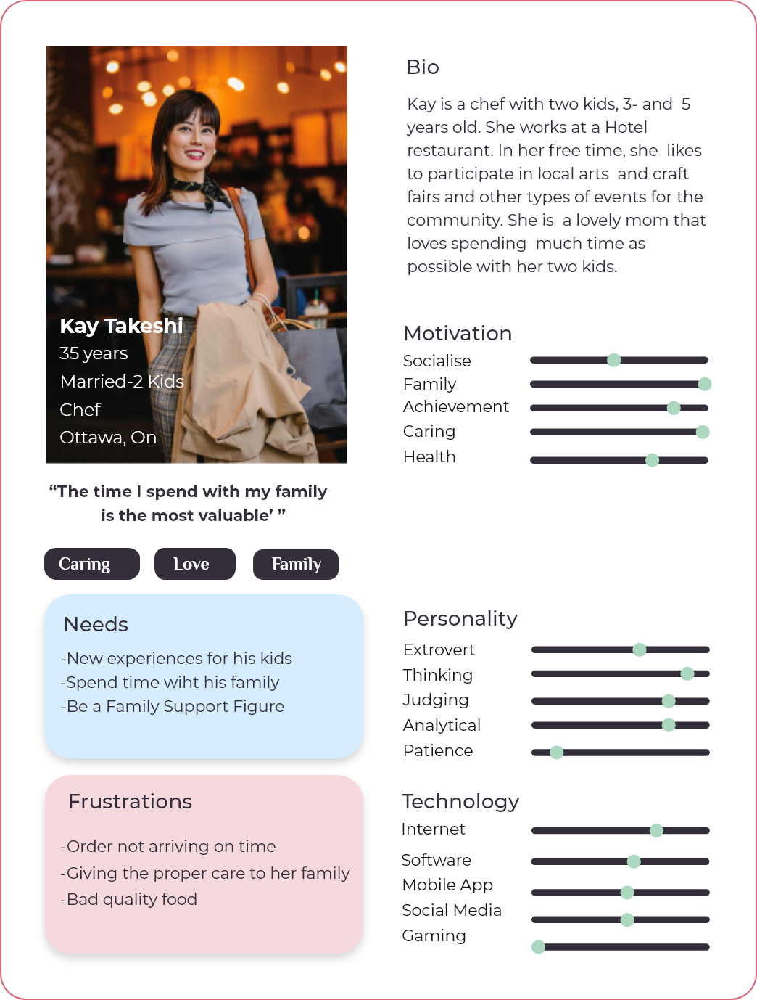 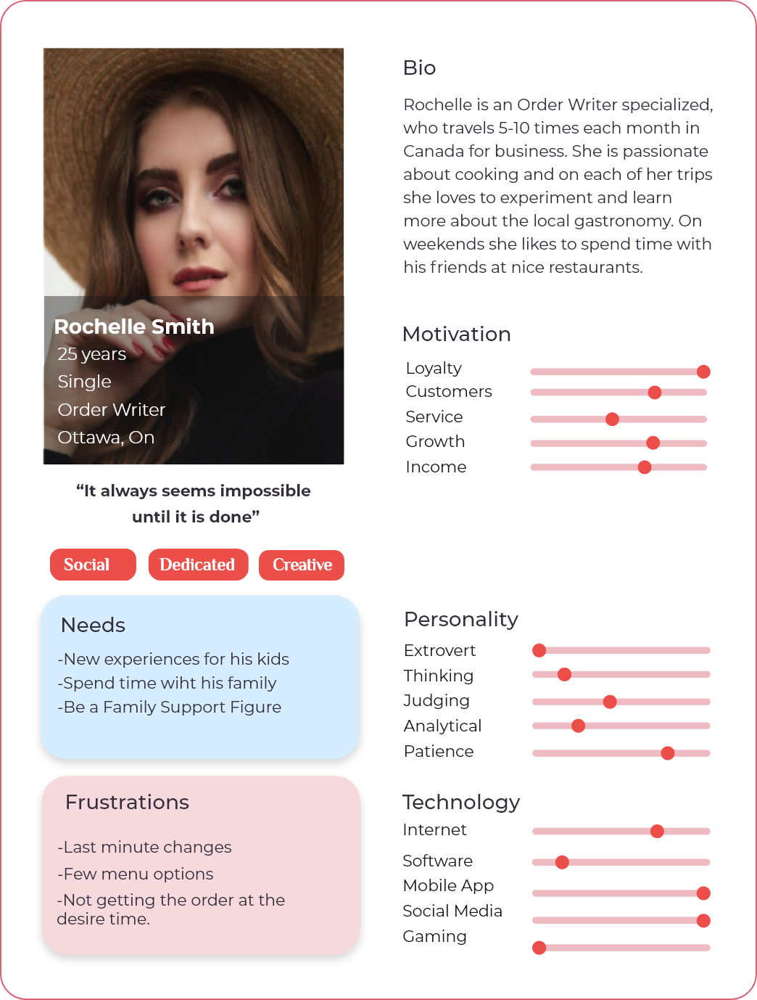Ideation
Site Map & User Flows
After having carried out the investigation and analysis, I began planning the information architecture of the website. I opted for a simple hierarchical structure where the navigation could be made easily thank to the insight provided from the Users.
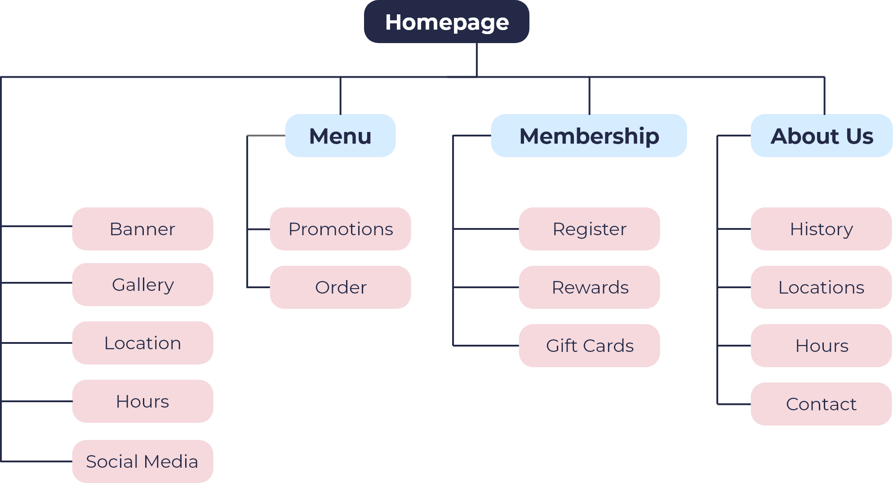 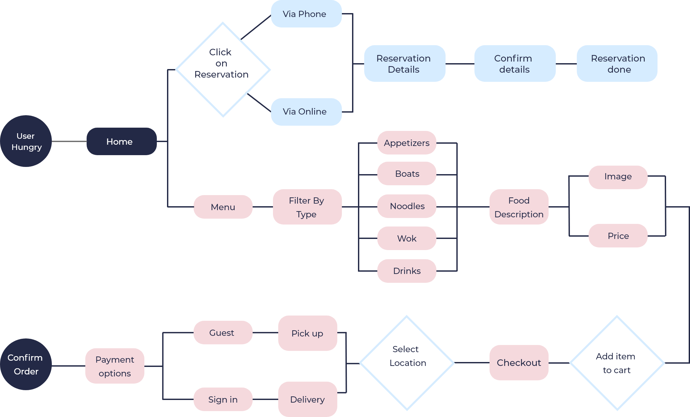Sketches
In the next stage I managed to materialize the ideas in the form of sketches. Through different options reflect the needs of the target audience, the company's mission and the needs of users.
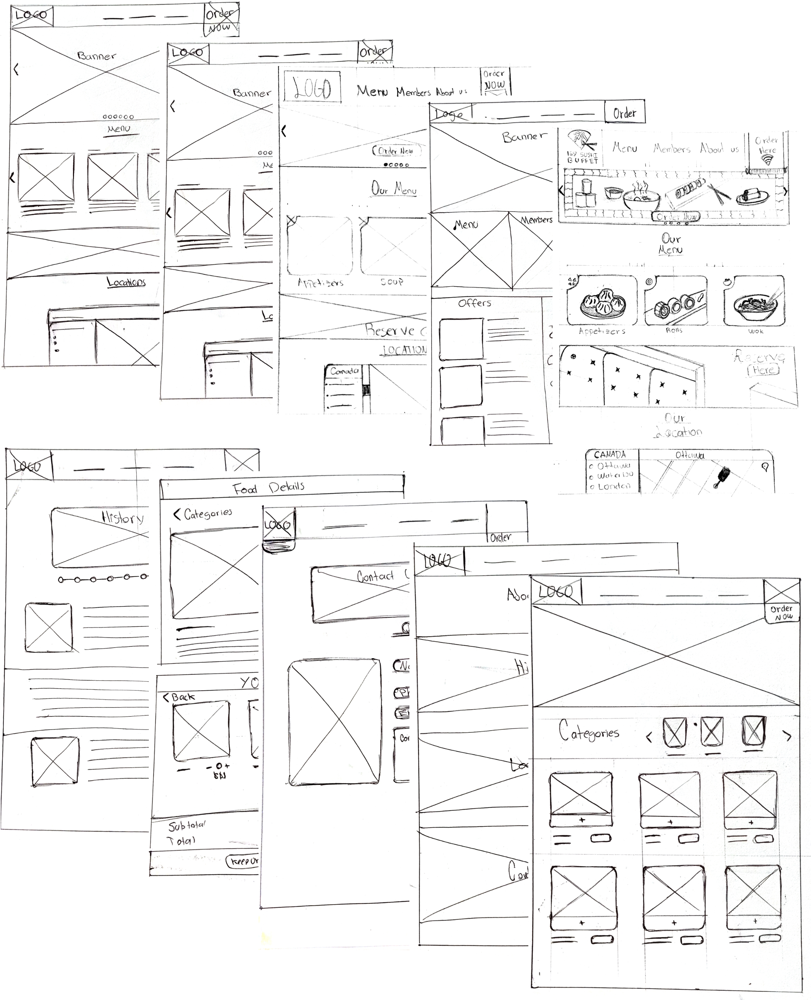Wireframes
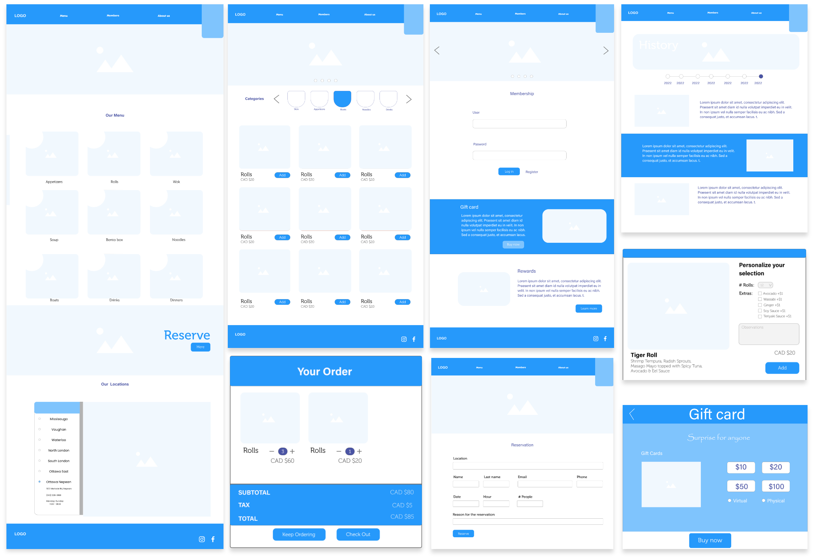High Fidelity Prototype

Menu

Add Item
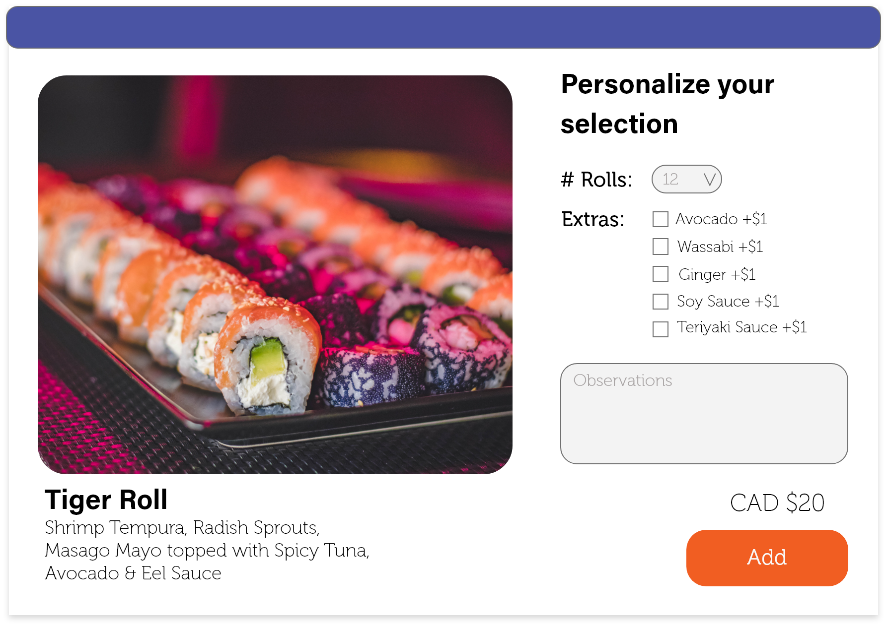Order Summary
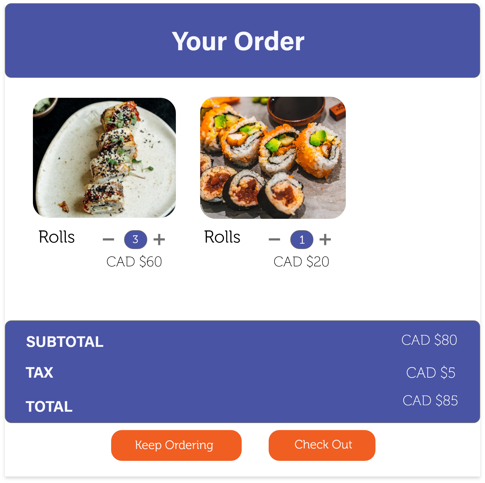Checkout
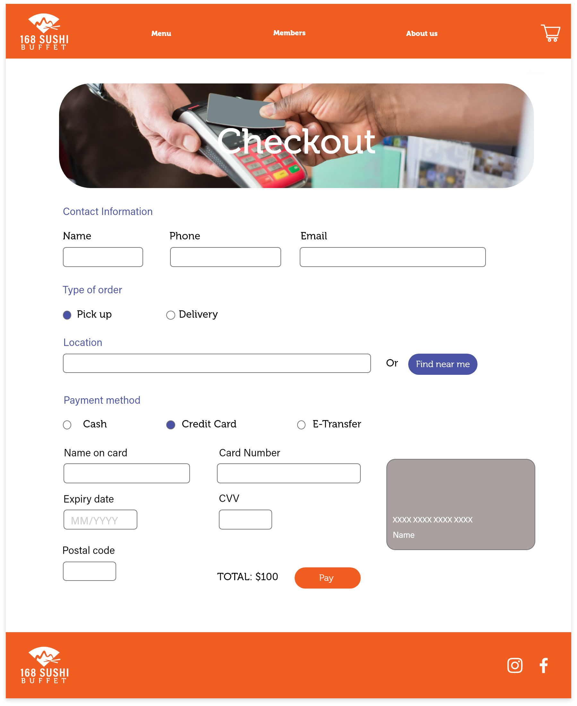Mobile Version
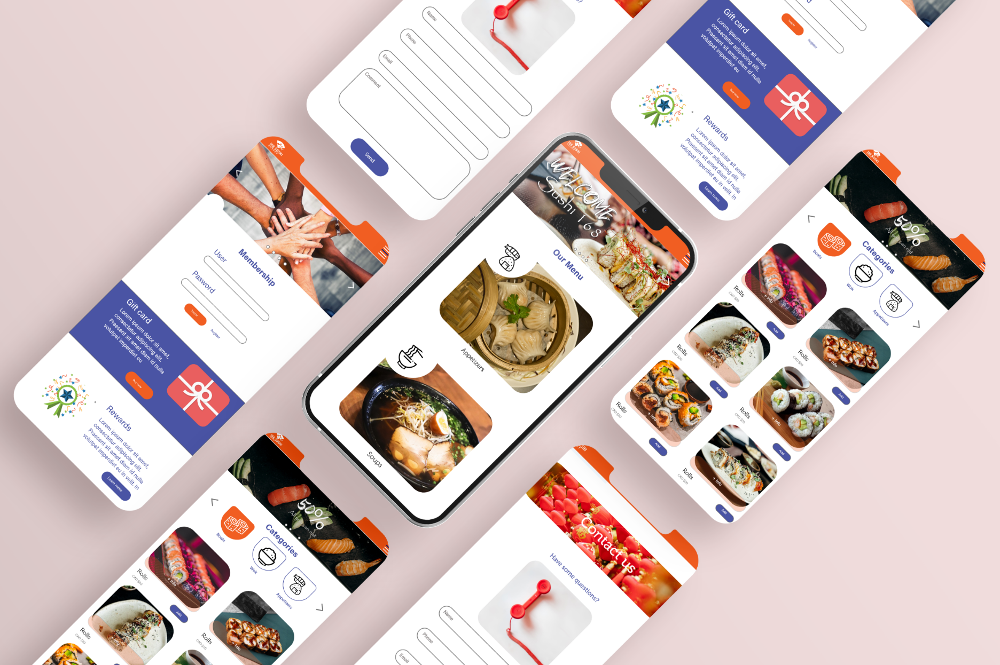What I learned
This project was a huge learning experience for me in so many ways. I learned a lot about the design process, and how to identify and solve customer needs. Moreover, I would like to highlight some aspects that impact caught my attention: 1. Business needs and User needs My work as a designer is based on solving problems that improve the experience of a product or service. I was able to see that our job is not only to delight the user, but we also need to provide a solution that adds value to the business. 2. The importance of research Compared to previous projects, this project required more profound research. This was the perfect opportunity to strengthen my research skills and get more involved in learning about users and their needs. I realized that research provides an essential foundation for design strategy since you will have the data to back your strategy and design decision